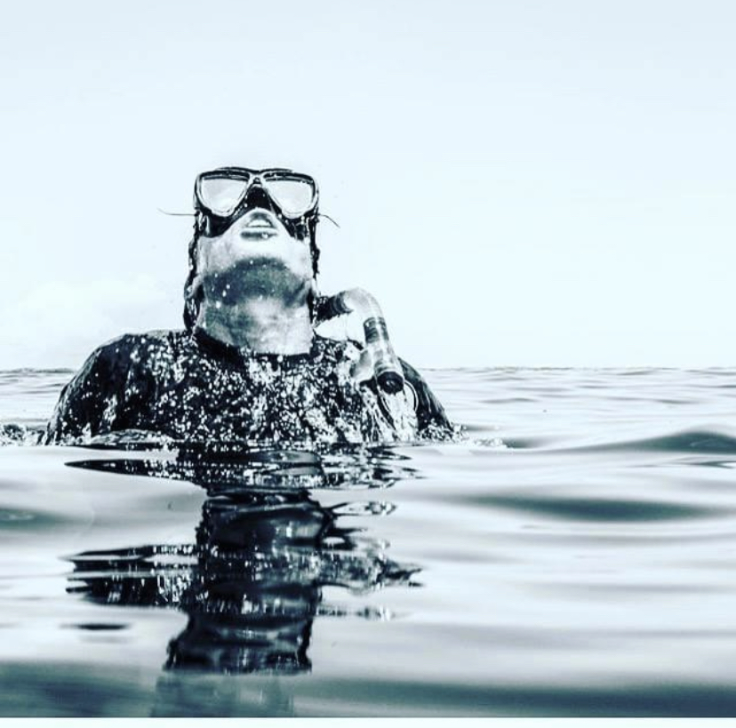

Spearfishing combines the thrill of free diving with the precision of hunting. In Key West's crystal-clear waters, it's one of the most rewarding activities you can experience. This guide covers everything beginners need to know, from technique basics to equipment selection and critical safety protocols.
What is Spearfishing?
Spearfishing is underwater hunting using a speargun or pole spear. You dive down, locate fish on the reef or in open water, and make a precision shot. It requires good breath-hold training, calmness, and respect for the ocean. Done right, it's sustainable and incredibly fun.
Safety First: Non-Negotiable Rules
Before you pick up a speargun, understand these absolute rules:
- Never hunt alone: Your buddy watches for boats, current changes, and can assist if you have issues
- Never hunt at night: Visibility is zero, and you can't see predators or obstacles
- No spearfishing in marine reserves: Check local regulations—protected areas are off-limits
- Respect size and bag limits: Florida's FWC sets strict regulations; follow them precisely
- Never shoot near swimmers: Clearly mark your hunting zone with a buoy and flag
- No shallow-water blackout risks: Don't hyperventilate before dives to extend breath hold time
Essential Spearfishing Gear
- Speargun or pole spear (start with pole spear—easier to control)
- Wetsuit (3mm recommended for Key West year-round)
- Dive fins (longer blades = more power and endurance)
- Quality diving mask (low-volume is best)
- Snorkel
- Dive knife (for cutting line or self-defense)
- Fish stringer (to secure your catch)
- Dive weight belt
- Dive flag and buoy (red and white flag marks your location)
Spearfishing Techniques for Beginners
The Approach: Snorkel on the surface, scanning the reef for fish. When you spot one, take several deep breaths (never hyperventilate), then submerge. Glide down quietly—sudden movements scare fish away.
The Shot: Get close—within 6–10 feet for beginners. Aim for the vital zone (head or just behind the gills). A clean shot is quick and humane. Miss? The fish scatter; reload and continue hunting elsewhere.
Recovery: After your shot, surface immediately, recover the fish, and secure it to your stringer. Never leave a wounded fish in the water.
Freediving Training Essentials
Spearfishing demands good breath-hold ability. You don't need to dive 120 feet like Captain Dane—most beginner fishing happens 20–40 feet down. But proper training is critical.
- Relaxation on the surface: Calm breathing prepares your body for the dive
- Avoid hyperventilation: It depletes CO₂, masking your urge to breathe—a dangerous trap
- Practice shallow-water breath-hold: Start by holding your breath for 1–2 minutes, work up gradually
- Know your limits: Only dive as deep as you can comfortably reach in 1 minute or less
- Use proper weighting: You should sink slowly, maintaining buoyancy control
Consider taking a freediving certification course (AIDA or PADI Freediver). It's an investment that transforms your spearfishing experience and keeps you safe.
Best Fish for Beginners
Grouper: Medium-sized, slow-moving, good eating. You'll find them on reefs and wrecks, hanging in crevices. Perfect starter fish.
Snapper: Slightly faster than grouper but still huntable for beginners. Yellowtail snapper schools are common on shallow reefs.
Mackerel: Fast and challenging but rewarding. Good practice for technique development.
Lobster: Not a fish, but excellent hunting—they're slow and found in rocky crevices. Perfect for night diving (once trained).
Key West Spearfishing Regulations (checked at myfwc.com, October 2026)
FWC treats a speared fish exactly like a hooked one: same size limits, same bag limits, same seasons, same license. The extra rules are about where and how you shoot.
- License: a Florida saltwater fishing license, resident or non-resident ($17 for 3 days, $30 for 7). On a charter the boat’s license covers you. There is no residency requirement for spearfishing.
- Gear: pole spears, Hawaiian slings and band guns are legal. Powerheads, bang sticks and rebreathers are prohibited in Florida.
- Where you can’t: within 100 yards of a public swimming beach, a fishing pier or a bridge open to fishing; within 100 feet of a jetty; in any state park waters (Pennekamp, Bahia Honda); and anywhere in Monroe County from Long Key north to the Dade County line. Key West, the Lower Keys and Marathon are open; Islamorada and Key Largo are not.
- Never spear: tarpon, bonefish, permit, pompano, snook, red drum, spotted seatrout, tripletail, any shark or billfish, Nassau or Goliath grouper, lobster, and the ornamental reef families: parrotfish, angelfish, butterflyfish, surgeonfish, puffers, and triggerfish other than gray and ocean.
- Sizes and seasons for the fish you will shoot: hogfish 16" fork, 1 a day, open May 1 – Oct 31 only. Mangrove snapper 10", 5 a day. Yellowtail 12", 10 a day. Mutton 18", 5 a day. Red grouper 20", black 24", 1 black or gag, all shallow-water grouper closed January 1 – April 30. Lobster can’t be speared at all. Full table in our Florida Keys fishing regulations for visitors.
- Dive flag: 20×24" on the boat, 12×12" on a float, and stay within 300 feet of it in open water, 100 feet in a channel. Boaters must stay 300 feet off your flag.
- Sanctuary zones: the Florida Keys National Marine Sanctuary has no-take Sanctuary Preservation Areas around the most popular reefs (Sand Key, Eastern Dry Rocks, Rock Key, Western Sambo). No spearing, no fishing, no lobstering inside the yellow buoys. Your captain knows the lines; if you’re on your own, load the sanctuary chart before you leave the dock.
Where beginners spearfish in Key West
Three kinds of water, in the order a first-timer should meet them:
- Patch reefs, 10–25 feet, inside the main reef. Hawk Channel is dotted with coral heads a few acres across, in water you can see the bottom of from the boat. Mangrove snapper, hogfish in season, the odd mutton. Short dives, easy surface intervals, and you learn to hold still and let fish come to you. This is where Captain Dane starts everyone.
- The main reef line, 20–45 feet, six to seven miles out. Bigger grouper and mutton snapper along the ledges, with the caveat that the best-known spots are inside no-take zones. The legal reef between them is plenty.
- Wrecks and the Gulf side. Deeper, longer dives, cobia and amberjack, and current. Not a first-trip place.
Conditions: visibility is best May through September when the water is 84–88°F and the wind lies down; winter fronts churn the reef and stack the boat days in a row. A 3-mil wetsuit covers April through November; add a hood or go 5-mil for the January cold fronts.
What a spearfishing charter costs
A guided spearfishing trip out of Key West runs about $550 to $1,100 for the boat (half day to full day, up to 4 divers), which is $140 to $275 a head for a full boat. The charter covers the vessel license, the dive flag, the sanctuary lines and the fish cleaning; you bring fins, a mask and a wetsuit, and most captains have loaner pole spears. Captain Dane’s 4-hour Captain’s Choice trip takes spearfishing requests, and Six Fins runs light-tackle patch reef trips you can shoot from.

4-Hour Captain’s Choice — Walk The Plank
Captain Dane picks the reef of the day for up to 4. Spearfishing and freediving coaching on request.
Check Availability
Private Patch Reef — Six Fins Charter
Shallow patch reefs inside Hawk Channel, $550 for the boat. The beginner water.
Check Availability
8-Hour Private Charter — 3rd Degree Charters
Full day for up to 4, time to work the reef line and a wreck. $1,100 for the boat.
Check AvailabilityHunting Reef vs. Open Water
Reef Hunting: Hunt reefs in 15–40 feet of water. Fish hide in crevices and under coral heads. Use the reef for cover and approach carefully. This is beginner-friendly.
Open Water: Blue-water hunting for large pelagics (kings, amberjacks). More advanced, requires better fitness and comfort at depth. Save this for after you've logged 50+ dives.
Spearfishing questions, answered
Do you need a license to spearfish in Florida?
Yes, a regular Florida saltwater fishing license; there is no separate spearfishing license and no residency requirement. Non-residents pay $17 for 3 days or $30 for 7 (FWC, October 2026). On a charter the vessel license covers you.
Is spearfishing legal in Key West?
Yes. Key West, the Lower Keys and Marathon are open to spearfishing with a saltwater license. The ban is on the Upper Keys: no spearing in Monroe County from Long Key north to the Dade County line, and none inside state parks or the sanctuary's no-take zones.
What can you spearfish in the Florida Keys?
Hogfish (May through October), mangrove, yellowtail and mutton snapper year-round, red and black grouper May through December, plus cobia, amberjack and mackerel offshore. You may never spear tarpon, bonefish, permit, snook, sharks, lobster, Nassau or Goliath grouper, or ornamental reef fish like parrotfish and angelfish.
Can a beginner spearfish in Key West?
Yes, on the patch reefs in 10 to 25 feet of water inside the main reef, where you can see the bottom from the boat and dives are short. Book a charter for the first trip: the captain handles the license, the sanctuary lines and the limits, and most have loaner pole spears.
What is the best time of year for spearfishing in Key West?
May through September: the water is 84 to 88 degrees, visibility is best, grouper and hogfish are both open, and the wind lies down. Winter fronts churn the reef and can blow out several days in a row, and grouper is release-only January through April.
The Clean Harvest Philosophy
Spearfishing demands ethical behavior. Only shoot fish you'll eat. Know the exact size and bag limits before you dive. Leave the reef healthier than you found it. Respect the fish and the ocean.
Ready to Learn Spearfishing?
Captain Dane leads guided spearfishing charters with expert training on technique, safety, and local waters. Perfect for beginners.
Check Availability